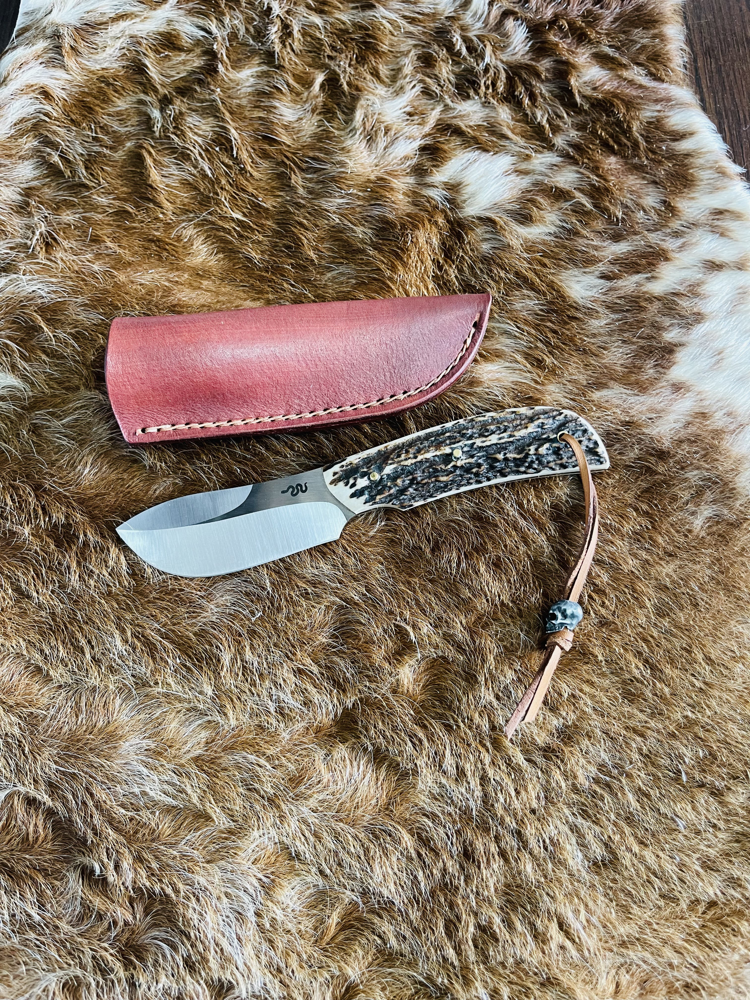
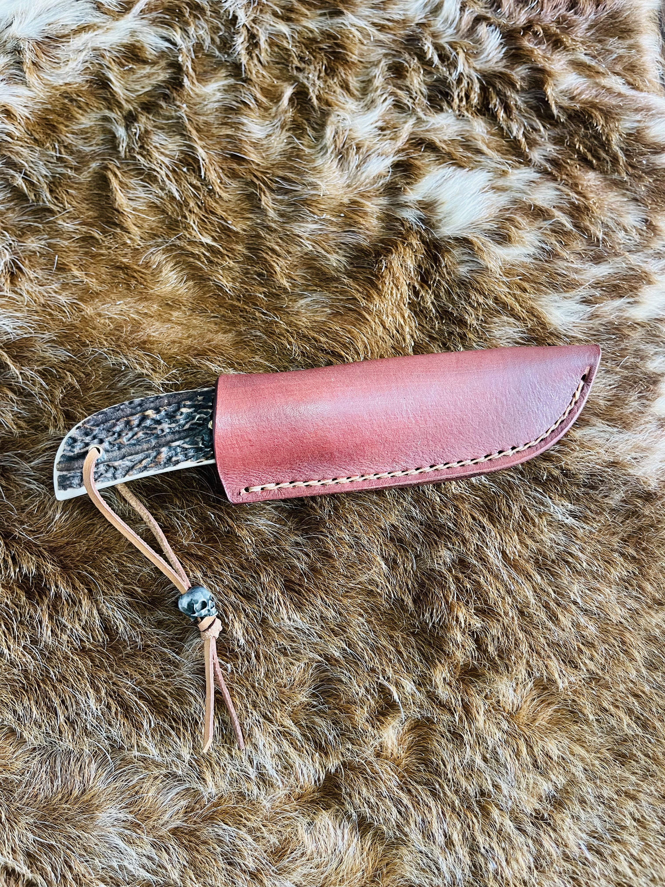
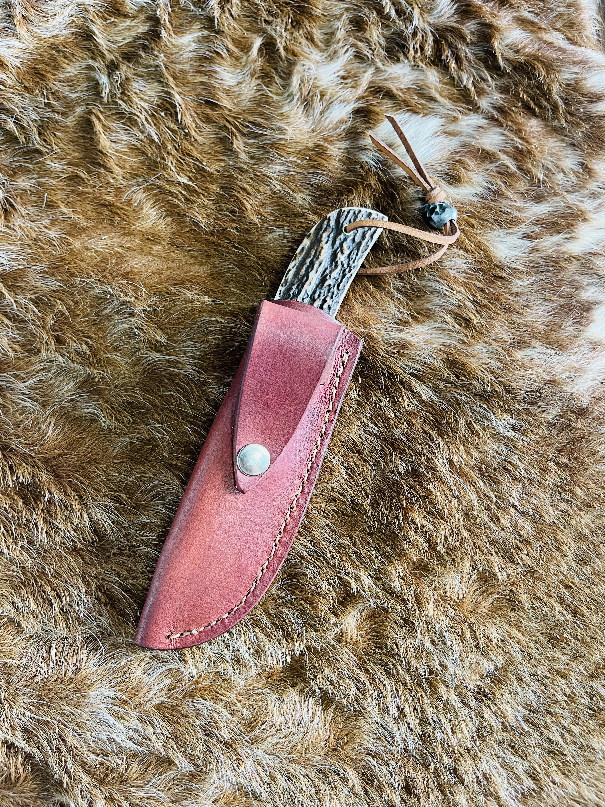

MC KNIFEMAKER · CUSTOM KNIVES
SMALL NESSMUK KNIFE
SOLD
SPECIFICATIONS
1070 Carbon Steel
Blade Length: 4"
Stock Thickness: 4 mm
OAL (Overall Length): 8.5"
Red Deer Stag Scales
Leather Pouch Sheath
← BACK TO SHOP